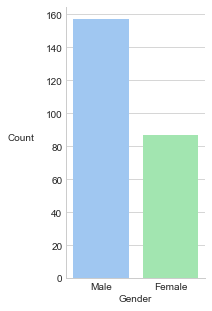

Univariate Analysis
March 3, 2018
Univariate Analysis
In general, there are three types of quantitative analysis.
- univariate (one variable)
- bivariate (two variables)
- multivariate (more than two variables)
We will focus on univariate analysis in this article.
Import Libraries
import matplotlib.pyplot as plt
import numpy as np
import scipy as sp
import seaborn as sns
Set Seaborn Visualisation Options
sns.set_style('whitegrid')
sns.set_palette('Set3')
Load Dataset
We will be using the tips dataset, which contains information collected by a waiter about his tips as well as the characteristics of the diner.
tips = sns.load_dataset('tips')
print(tips.head())
total_bill tip sex smoker day time size
0 16.99 1.01 Female No Sun Dinner 2
1 10.34 1.66 Male No Sun Dinner 3
2 21.01 3.50 Male No Sun Dinner 3
3 23.68 3.31 Male No Sun Dinner 2
4 24.59 3.61 Female No Sun Dinner 4
Nominal Variables
For nominal variables, we can summarise the data using either a frequency table or a bar chart.
sex_freq_table = tips['sex'].value_counts()
print(sex_freq_table)
Male 157
Female 87
Name: sex, dtype: int64
# to control the aspect ratio of the plot
fig, ax = plt.subplots(figsize=(2.5, 5))
# unfortunate variable naming
sex_bar = sns.barplot(x=sex_freq_table.index, y=sex_freq_table.values)

Interval (Numerical) Variables
For numerical variables, we are interested in the following.
- Measures of central tendency (mean, mode, median).
- Measures of dispersion (standard deviation, variance).
Measures of Central Tendency
NumPy is able to calculate mean and median, while we will utilise scipy to derive the mode.
print(np.mean(tips['total_bill']))
19.785942622950824
print(np.median(tips['total_bill']))
17.795
print(sp.stats.mode(tips['total_bill']))
ModeResult(mode=array([13.42]), count=array([3]))
Measures of Dispersion
NumPy also comes with utility functions that calculate standard deviation and variance. We can adapt the functions to be used for both populations and samples by setting the appropriate degrees of freedom.
print(np.std(tips['total_bill'], ddof=0))
8.88415057777113
print(np.var(tips['total_bill'], ddof=0))
78.92813148851113